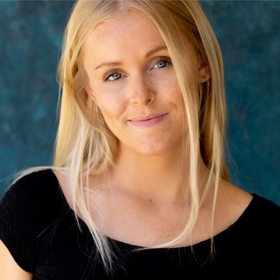
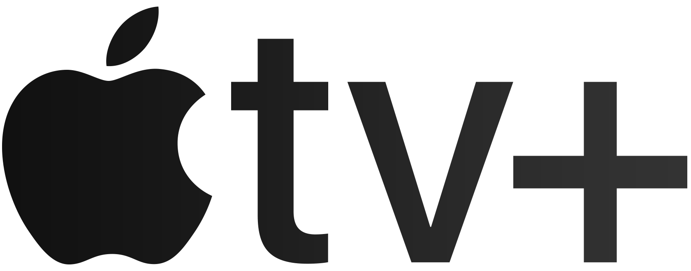
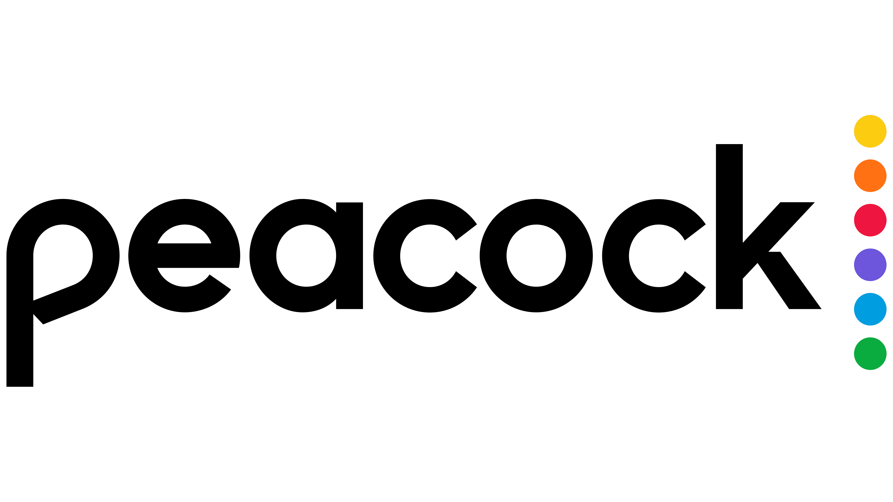
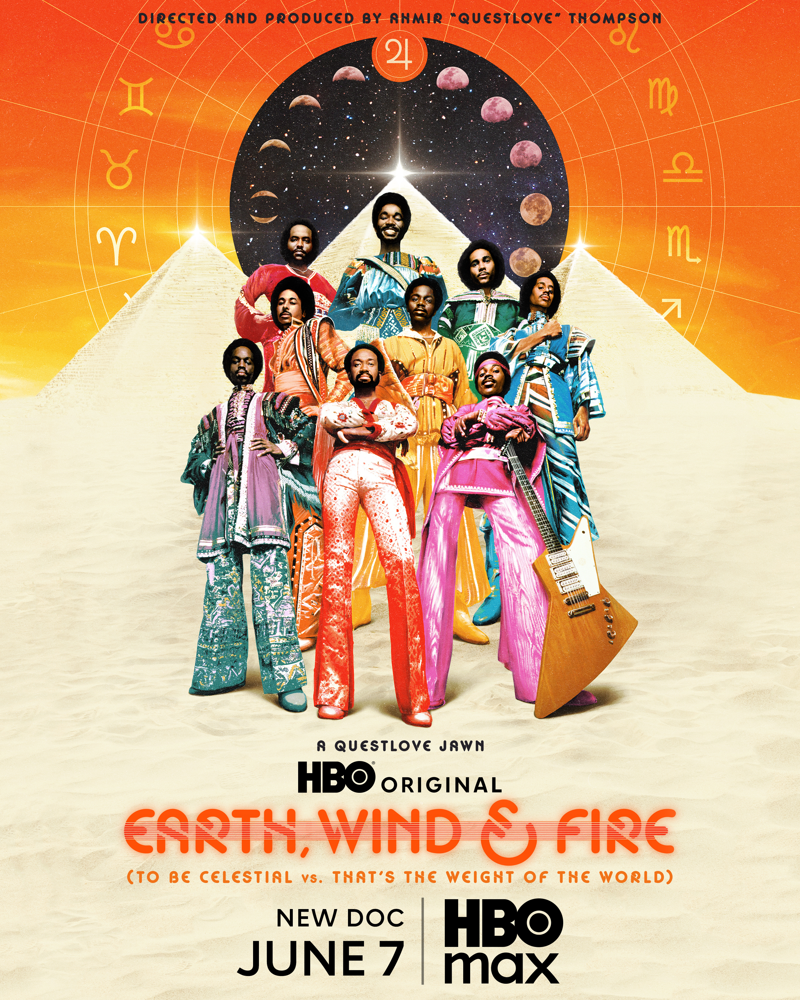
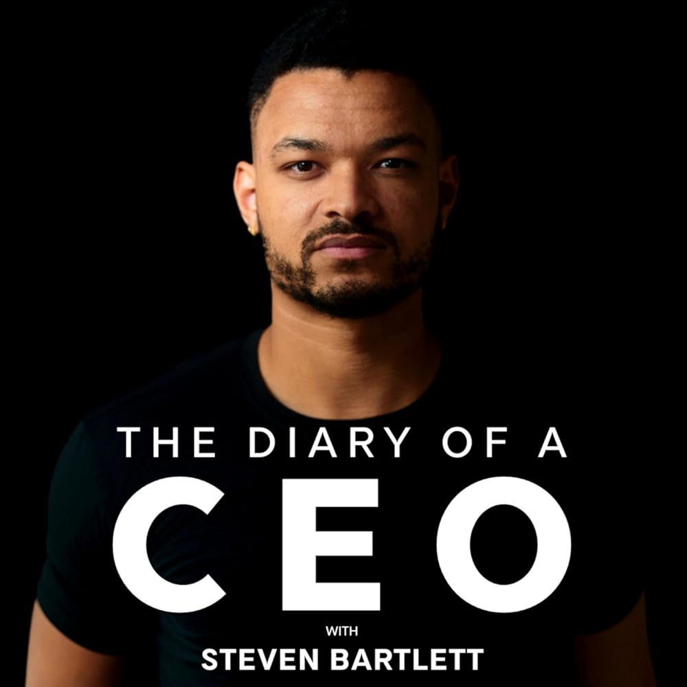
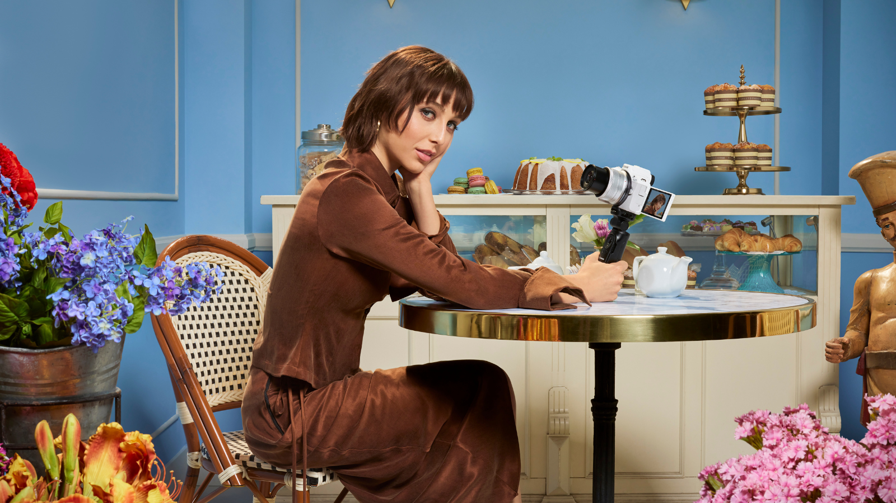

Strategic storyteller and program builder with 5+ years of experience shaping how the world's most compelling stories reach audiences, ready to bring that to YouTube's scale. I've lived inside the media and creator economy my entire career, and I know how to turn that fluency into programs that actually move the needle.
Strategic Growth Programs
YouTube Ads Marketing
I obsess over words. Every pitch deck, marketing brief, enablement document, and social caption I've written has gone through more drafts than anyone asked for, because I genuinely can't let something go until it says exactly what it needs to say, exactly the right way. Good copy is the difference between a program that lands and one that gets scrolled past.





At RadicalMedia, pitching network executives at HBO, Netflix, and Apple isn't a rare event, it's Tuesday. I've gotten really good at walking into a room with the most senior person there and making them feel like I've already thought of everything they're about to ask.
At Salesforce I was handed a blank doc and told to build a partner training program. I built 200 pages of it, trained 548+ partners, and launched it across 10 products. I genuinely love that kind of work, the kind where there's no template and you just have to figure it out.
I've been in long-form documentary for almost four years and I love it. But I'd be lying if I said I wasn't constantly watching what's happening on YouTube with a little bit of envy. The creator economy is where the most interesting marketing conversations are happening right now, and I want to be in the middle of them.
My job at RadicalMedia is basically organized chaos. I'm managing talent, networks, publicists, directors, and festival programmers all at the same time, all with different priorities, all on deadline. I thrive in fast-paced, high energy environments.
I'm not exaggerating when I say I know what's happening on the internet before most people wake up. I track creators the way some people track stocks, who's growing, who's plateauing, what sounds are about to cycle through, which niche communities are about to go mainstream. It's not research for me, it's just how I exist online. I understand what makes each creator (no matter the size) valuable for different brand goals. And I think that makes me genuinely useful for this role.
RadicalMedia is where I learned what it actually means to bring a story and a brand to market. I've worked on projects with some of the most iconic artists alive: Earth, Wind & Fire, Noah Kahan, Lil Nas X, and Bono/U2, and I've gotten to shepherd those stories from early development all the way through major platform launches and festival premieres. I develop C-suite presentations for major network partners, manage end-to-end program logistics across cross-functional teams, and oversee brand presence across 1.2M+ social followers. I also serve as the primary copyeditor across all marketing materials, trailers, press assets, and social content, making sure every word that goes out reflects the project the right way.
Salesforce was my first real look at how a company operates at massive scale, and specifically what it takes to get hundreds of partners actually using a new product. I built a training program from scratch, got in front of C-suite executives to present strategic frameworks, and created enablement content that genuinely moved the needle on adoption. It gave me a business foundation that I pull from constantly.

USC gave me two degrees, a 3.9 GPA, and probably the most formative four years of my life. Studying both business and entertainment was the perfect setup for literally everything I've done since. I loved everything from the Trojan Vision show that I worked on, to the professors and influencers I learned from in Marshall School of Business, to exploring everything that Los Angeles has to offer.

I spend a lot of time thinking about why certain creators break through and others don't. These five have figured something out, and they cover the full spectrum, from mega-scale brands to niche community builders, which is exactly the range you need to understand if you want to work in YouTube's creator ecosystem.

DCSteven Bartlett built one of the most consistent long-form interview formats on YouTube, a masterclass in retention, guest selection, and treating YouTube like a real media company.
Nobody builds audience loyalty quite like Tinx. Her followers don't just watch her, they listen to her. That kind of trust is exactly what brands want to be adjacent to.

ECEmma basically invented the modern vlogging aesthetic and then quietly evolved past it. Her "Ask Me Anything" series is one of the best examples of a creator using long-form to deepen audience trust rather than just chase views. She's built a brand that has genuinely transcended the platform, which almost never happens, and it started with people feeling like they actually knew her.
John has been on YouTube since basically the beginning and has never once chased a trend. His channel is proof that if you're genuinely interested in things and you talk about them with real enthusiasm, people will show up. There's a lesson in there for every brand trying to figure out what to do on YouTube.
Eli has built something that's genuinely hard to replicate: a community that feels personal even at real scale. She's honest in a way that doesn't feel performed, and her audience responds to it every time.
what I could do
for your team at Google.